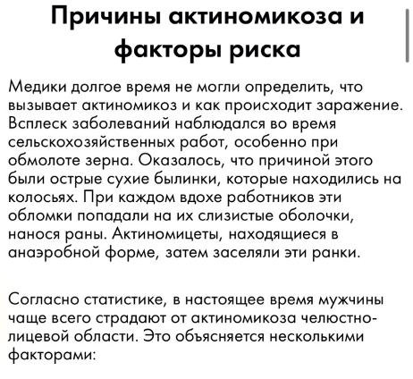
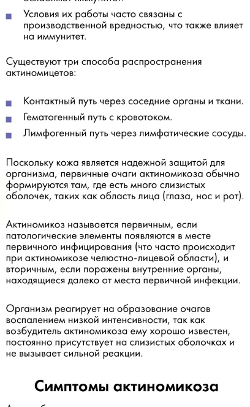
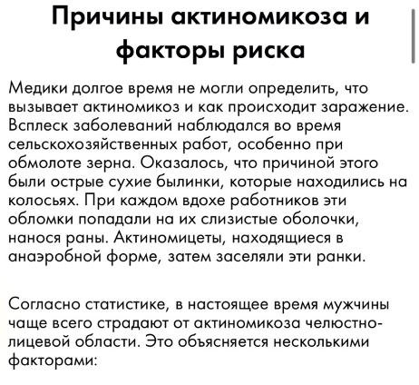
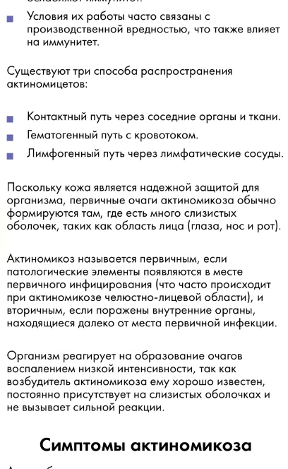
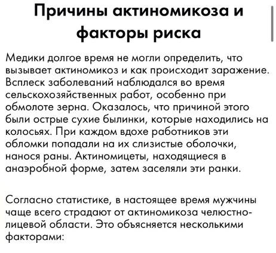
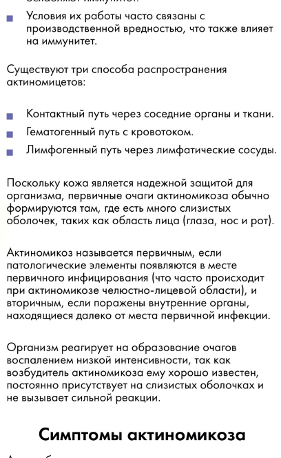

Цифровой атлас периимплантитов и воспалительных заболеваний полости рта
Статьи
Бактериальный стоматит
Острый герпетический гингивостоматит
Гонокковый фарингит
Туберкулёз полости рта
Гиперпластический кандидоз при Спиде
Оральный мукозит
Веррукозная карцинома
Меланоз курильщика
Меланотическое пятно
Первичный сифилис
ГЕРМЕТИЧЕСКИЙ СТОМАТИТ
Лейкоплакия
Неходж лимфома
Альвеолит
периимплантит с мукозитом
Сифилис
Пародонтит
Гингивит
спонг гингивит
Кератоз
Актиномикоз полости рта
 

 


